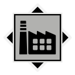
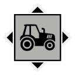

Map
Nearby locations
The 10 closest locations, measured in a straight line between the map markers (1 world unit is 1 metre), with the direction to go from here.
| Location | Kind | Region | Distance | Direction |
|---|---|---|---|---|
 Farstaborg Scrap Yard | Industry | Farmlands | 261 m | SW |
| Farstaborg Outpost | FNIX site | Farmlands | 327 m | SW |
 Nydala | Farm | Farmlands | 421 m | W |
| Skrankebol | Farm | Farmlands | 546 m | NW |
| Sjöglimten Control Point | Control point | Farmlands | 599 m | SW |
| Dyvik | Farm | Archipelago | 722 m | S |
| Lillå | Settlement | Forest | 730 m | N |
| Skogshult | Farm | Farmlands | 779 m | W |
| Dyviks Udde Ferry Pier | Port | Archipelago | 780 m | S |
| Glättra | Farm | Farmlands | 796 m | W |
Safehouse
There is a safehouse here: Farstaborg (24 m from the location marker). Its house photo lies next to it.
Loot
The location's files list no loot crate spawn points of their own.
No placed loot within 200 m is assigned to this location.
Missions
Missions whose name, briefing or steps mention Farstaborg.
| Mission | Type | Region | Summary |
|---|---|---|---|
| Test Run | Main FNIX Rising | Farmlands | Look for a snow plough for the truck, and pinpoint the location of FNIX's cannon |
From the game files
Distances are straight lines on the map between marker positions. A location's area in the game is not a circle, so the 300 m and 200 m radii on this page are a practical approximation, not the game's own borders.